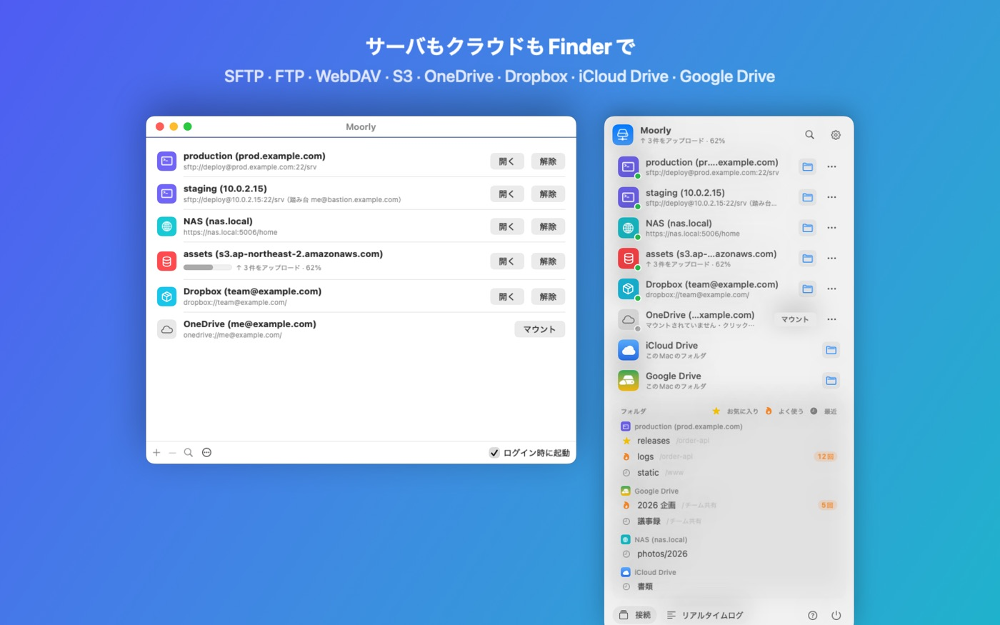
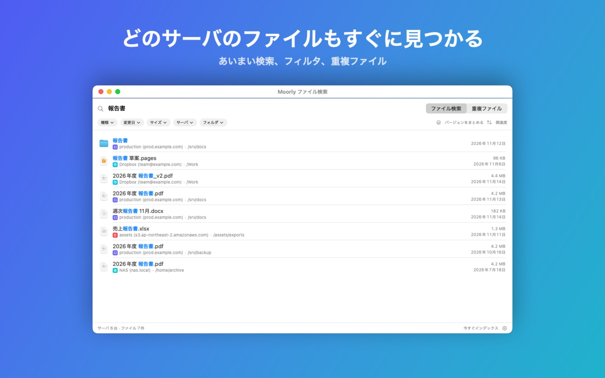
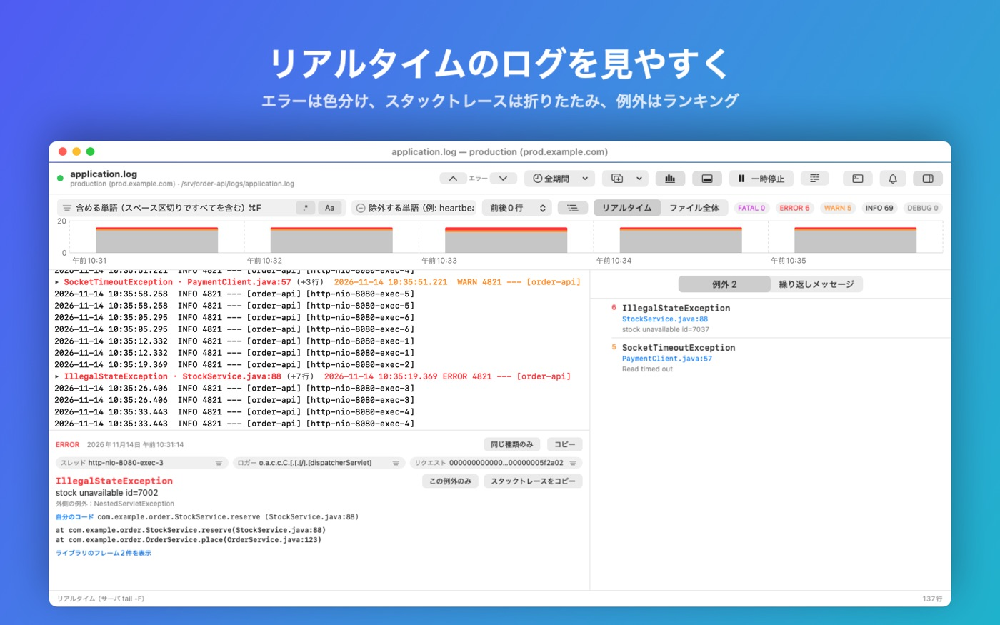

Moorly ユーザガイド
Moorly を使うと、SFTP、FTP、WebDAV、S3 サーバや OneDrive、Dropbox を Finder のサイドバーに表示して、Mac 上のファイルと同じように開いたり保存したりできます。 iCloud Drive や Google Drive アプリのフォルダなど、Mac 上にすでにあるフォルダも扱えます。
はじめに

- メニューバーの Moorly アイコンをクリックし、接続を開きます。
- +（⌘N）をクリックして、サービスを選択します。
- サーバ（SFTP、FTP、WebDAV、S3）：アドレス、ユーザ名、パスワードまたはキーを入力し、接続をテストして保存をクリックします。
クラウド（OneDrive、Dropbox）：Microsoft（または Dropbox）アカウントでログイン…をクリックします。ブラウザでサインインページが開きます。サインインしてアクセスを許可したあと、ブラウザで Moorly を開くかどうか確認されたら開くをクリックし、名前を確認して保存をクリックします。 - リストでマウントをクリックします。Finder のサイドバーの場所に接続が表示されます。
~/.ssh/config のサーバ一覧をまとめて読み込めます。SFTP サーバは初めてマウントするときに確認します。SFTP のヒント
- ~/.ssh/configから読み込む…を使うと、既存のホスト設定をそのまま利用できます。
- ジャンプホストを経由する必要がある場合は、詳細 › 踏み台サーバ（ジャンプホスト）に入力します。
- サーバのルート（
/）をマウントした場合、/procと/sysは表示されません（常に変化し続ける仮想フォルダのため）。
メニューバーのパネル
メニューバーの Moorly アイコンをクリックすると、パネルが開きます。（Control キーを押しながらクリック、または ⌥ キーを押しながらクリックすると、従来のメニューが開きます。）
- サーバ：各アイコンの点で状態がわかります。緑はマウント済み、オレンジは問題あり、グレイは未マウントです。行をクリックすると、最後に表示していたフォルダが開きます。…には、マウント解除、更新、ディスク使用量を分析、ターミナルで開くなどの項目があります。
- フォルダ：サーバごとに★ お気に入り · 🔥 よく使う · 🕘 最近が表示されます。フォルダにポインタを置いて ☆ をクリックすると、お気に入りに追加または削除できます。
- よく使うには、過去 30 日間に 2 回以上開いたフォルダが、開いた回数の多い順に表示されます。サーバごとの表示数は設定 › メニューで設定できます。
- Moorly で開いたフォルダは履歴が保持されるため、Finder の ◀（戻る）や ⌘↑ で上の階層のフォルダに移動できます。
- 転送：パネル上部の ⇅（または右クリックメニューの転送…）でアップロード・ダウンロードの一覧を表示します。進行状況、失敗の理由とやり直す、サーバごとの一時停止があります。
- フォルダ同期：サーバの…メニューや右クリックメニューのフォルダ同期…から、Mac のフォルダとサーバのフォルダを比べて変わったファイルだけをアップロード／ダウンロードします。比較で先に確認でき、受け取る側で別に変更されたファイルは上書きせず競合として知らせます。
サーバが多いとき：ツリーとタブ
設定 › メニューバーのパネル › 表示でリスト・ツリー・タブを選べます。
- グループ：接続の編集画面のグループ欄、またはサーバの… › グループで設定します（例：本番、開発）。グループのないサーバはサーバ（SFTP・FTP・WebDAV）とクラウド（S3・OneDrive・Dropbox）に自動でまとめられ、ローカルフォルダは別のグループになります。
- ツリー：グループとサーバを▸で折りたたんだり展開したりします。サーバを展開すると、そのサーバのお気に入り・よく使う・最近使ったフォルダがすぐ下に表示されます。折りたたみ状態は保存されます。
- タブ：上部のタブ（すべて、各グループ）をクリックすると、そのグループのサーバとフォルダだけが表示されます。
- サーバとローカルフォルダが9件以上あると、上部にサーバ名で絞り込む欄が表示されます。リストが画面より長い場合はパネル内でスクロールします。
ドラッグしてアップロード
Finder でファイルをドラッグし始めると、メニューバーアイコンの下に小さな“Moorlyでアップロード”領域が表示されます。ファイルをそこにドラッグすると、サーバごとのフォルダが表示されます。
- フォルダにドロップすると、そのフォルダにアップロードされます。同じ名前のファイルがある場合は、両方が残されます（“名前 2”）。
- サーバのタイトルにドロップすると、アップロード先を選択できます。
- 最初からすべてのリストを表示するには、設定 › ドロップパネル › スタイルを変更します。
ローカルフォルダ（iCloud Drive · Google Drive · Box · 共有フォルダ）
Mac 上にすでにあるフォルダを、サーバと同じように扱えます。最近、よく使う、お気に入りに表示され、ファイルのドロップを受け付け、ファイル検索の対象にもなります。
- 設定 › ローカルフォルダ › フォルダを追加…をクリックします。
- フォルダを選択し、このフォルダを追加をクリックします。（macOS のセキュリティにより、フォルダごとに一度選択する必要があります。）
| 追加するもの | 選択する場所 |
|---|---|
| iCloud Drive | iCloud Driveを追加…ボタン（または ~/Library/Mobile Documents/com~apple~CloudDocs） |
| Google Drive | Google Drive アプリをインストールしてから、~/Library/CloudStorage/GoogleDrive-アカウント |
| Box · pCloud · MEGA | アプリをインストールしてから、アプリが作成するフォルダ（通常は ~/Library/CloudStorage 内） |
| 会社の共有フォルダ（SMB） | Finder で移動 › サーバへ接続を使って接続してから、/Volumes/共有名 |
Finder のショートカットメニュー
Moorly でマウントしたサーバ内のファイルやフォルダを Control キーを押しながらクリックすると、Moorly: で始まる項目が表示されます。
| 項目 | 選択対象 | 機能 |
|---|---|---|
| ライブログを表示 | 1 つのファイル | tail -F のように、サーバ上のログを追跡します |
| 同じファイルを検索 | 1 つのファイル | 同じ内容のファイルをサーバ上で検索します |
| ターミナルで開く | 1 つの項目 | そのフォルダで ssh セッションを開きます（SFTP） |
| ディスク使用量を分析 | 1 つのフォルダ | どのフォルダやファイルが容量を使っているかを確認します |
| お気に入りに追加 | 1 つのフォルダ | メニューバーのパネルの ★ に追加します |
| 共有リンクをコピー | 1 つの項目 | S3、OneDrive、Dropbox の共有リンクを作成します |
| サーバ上でtar.gzに圧縮／サーバ上でzipに圧縮、サーバ上で展開、サーバ上で複製 | 1 つ以上 | ダウンロードせずにサーバ上で実行します（SFTP） |
| このMacに常に保持 / 保持をやめる | 1件以上 | 前もってダウンロードし、サーバの変更も取り込み続けます。サーバに接続できなくても開けます。フォルダを選ぶと中の項目もすべて対象になります |
サーバの種類によって使用できない操作の場合は、その理由が表示されます。
Cryptomator 金庫（暗号化フォルダ）
ファイルはアップロード前にこの Mac で暗号化されます。サーバには読めない名前と内容しか保存されないため、クラウド事業者やサーバ管理者、アカウントを盗んだ人にも中身は見えません。標準の Cryptomator 形式なので、Cryptomator アプリ（Windows・iPhone・Android）でも同じ金庫を開けます。
- パネルでサーバの … › Cryptomator 金庫… をクリックします（または接続ウインドウの … › Cryptomator 金庫を開く／作成…）。
- 既存の金庫を開く：金庫フォルダ（
vault.cryptomatorがあるフォルダ）とパスワードを入力します。新しい金庫を作成：作成するフォルダと 8 文字以上のパスワードを入力します。 - 金庫は別の接続として Finder に表示されます。サイドバーの名前に 🔒 が付き、中のフォルダやファイルのアイコンには鍵の印が付くので区別できます。中では普通のフォルダと同じように開いて保存できます。
- 隠されるのはファイル名と内容です。ファイル数、おおよそのサイズ、変更日時はサーバから見えます。
- 金庫内のファイルでは、サーバ上での圧縮・共有リンク・リアルタイムログは使えません（サーバは内容を読めないため）。
- 対応形式：Cryptomator 金庫形式 7・8。暗号方式は AES-GCM（Cryptomator 1.7 以降の既定）と AES-CTR+HMAC（以前の金庫）。以前の Cryptomator で作成した金庫もそのまま開いて使えます。
- ロック：パネルで金庫の … › 金庫をロック。マウントが解除され、鍵がこの Mac から削除されるので、次に開くときにパスワードを求めます。設定 › Cryptomator 金庫で、画面のロックやスリープ時に自動でロックできます。
- 毎日の再確認：金庫の … › 再度開くとき › 毎日ロックして Touch ID で開く を選ぶと、開いてから 1 日経つとロックされ、次は指紋だけで開けます。Touch ID のない Mac では Mac のログインパスワード（または Apple Watch）で確認します。金庫のパスワードで開くを選ぶと毎回金庫のパスワードを求めます。
- パスワードの変更：… › 金庫のパスワードを変更…。ファイルは再暗号化されず鍵ファイルだけが変わるので、すぐに終わります。Cryptomator アプリでも新しいパスワードで開きます。
- 復旧キー：新しい金庫を作成すると表示されます（あとから … › 復旧キーを表示…）。パスワードを忘れたら、金庫のパスワードを変更…で復旧キーを選んで新しいパスワードを設定します。Moorly 形式のため、Cryptomator アプリの単語による復旧キーとは異なります。
ファイル検索

メニューバーのパネルで 🔍 をクリックするか、どこからでも ⌃⌥⌘F を押します。まだ開いていないフォルダ内のファイルも、名前で検索できます。
- スペースや入力ミスがあっても見つかります。
- 検索フィールドの下のすべて／ファイル／フォルダや、種類、日付、サイズ、フォルダで絞り込めます。
- 条件：
ext:pdfsize:>100mbkind:folderfolder:/var/logserver:proddate:week - 重複ファイルタブでは、複数のサーバにある同じファイルを検索できます。
- 右上の 📌 をオンにすると、ウインドウがほかのアプリより常に手前に表示されます。
- サーバごとにインデックスを作成する対象を設定 › ファイル検索で選択できます。SFTP と FTP では、
/usr、/proc、/var/logなどのシステムフォルダは対象外です。
リアルタイムログ

メニューバーのパネル › リアルタイムログ › ログファイルを開く…を選択するか、ファイルを Control キーを押しながらクリック › Moorly: ライブログを表示を選択します。
- パスまたは名前：
/var/log/syslogのようなパスを入力するか、appのように名前だけを入力して下のリストから選択します（最近変更された順）。 - フォルダを入力すると、そのフォルダとサブフォルダ内で最も新しく変更されたファイルを追跡します。より新しいファイル（新しい日別ログなど）が現れると、30 秒以内にそのファイルに切り替わります。名前を付け加えることもできます：
/app/log/*api* - 複数のサーバを選択すると、ログを時刻順に統合して表示します。
- フィルタ、除外する語句、前後の行の表示、レベル別の色分け、繰り返しメッセージのグループ化、タイムラインのグラフ、一時停止（⌘P）、ダーク表示 🌙、常に手前に表示 📌 が使えます。
- 🔔 監視：特定の語句やエラーの急増を macOS の通知で知らせます（ウインドウを閉じたあとも動作し続けます）。
tail -F を使うため、行はほぼ即座に表示されます。コマンドを実行できないアカウントやほかの種類のサーバでは、1.5 秒ごとに新しいデータを読み込みます。ターミナル（iTerm2 · ターミナル）
- 接続リストで SFTP サーバを Control キーを押しながらクリック › iTerm2で開くを選択します（またはパネルの …）。使用するアプリは設定 › ターミナルで選択します。
- パスワードなしでログインを設定…を使うと、この Mac 用の SSH キー（デフォルトは
~/.ssh/moorly_ed25519）が作成され、サーバの~/.ssh/authorized_keysに公開鍵が 1 行追加されます。以降、ターミナルでパスワードを求められなくなります。
アクセス権 — macOS が確認を求める理由
| macOS からの確認 | 理由 |
|---|---|
| “Moorly” が “Finder” を制御しようとしています | 最近使ったフォルダやよく使うフォルダを記録するために、最前面の Finder ウインドウに表示されているフォルダを確認します。確認するのは Finder が最前面にあるときだけで、ファイルに触れることはありません。オフにするには：設定 › メニュー › Finderで開いたフォルダを記録 |
| “Moorly” が “iTerm2”（ターミナル）を制御しようとしています | サーバをターミナルで開くときに、ssh コマンドを送るためです。 |
| フォルダの選択画面 | ローカルフォルダや SSH キーの保存先など、Moorly が使用できるフォルダをユーザ自身が正確に選択します。 |
| 通知 | ログ監視の通知です。 |
許可しなかった場合は、システム設定 › プライバシーとセキュリティ › オートメーションで変更できます。
無料版と Pro
無料版では、接続の種類（SFTP、FTP、WebDAV、S3、OneDrive、Dropbox）ごとに 1 件、ローカルフォルダ 1 件、ログ監視 1 件、金庫 1 件で、すべての機能を利用できます。App 内課金の Moorly Pro（買い切り）を購入すると、接続・ローカルフォルダ・ログ監視・金庫の数に制限がなくなります。
よくある質問
OneDrive の接続を保存すると「このアカウントには OneDrive がありません」と表示される
その個人用アカウントで OneDrive を一度も開いたことがありません。ブラウザで onedrive.live.com に一度サインインしてから、もう一度お試しください。職場または学校のアカウントには、OneDrive（Microsoft 365）のライセンスが必要です。
職場の Microsoft アカウントがブロックされる（「管理者の承認が必要」）
組織で外部アプリがブロックされています。管理者に Moorly の承認を依頼してください。
リストに警告（⚠︎）が表示される
サーバに接続できなかったか、サインインの有効期限が切れています。パネルで … › やり直すを選択するか、警告をクリックしてもう一度サインインしてください。
Finder で開いたフォルダが「最近」に表示されない
Finder の制御が許可されていることを確認してください（アクセス権を参照）。パネルにオレンジ色の通知が表示されている場合は、オートメーション設定を開く…をクリックします。
ショートカットメニューに Moorly の項目がない
これらの項目は Moorly でマウントしたサーバ内にのみ表示されます。iCloud Drive などのローカルフォルダには表示されません。
ジャンプホスト経由の SFTP 接続に失敗する
ジャンプホストの sshd で TCP 転送が許可されている必要があります（AllowTcpForwarding yes、デフォルト）。ホストには、ジャンプホストから見たアドレスを入力してください。
ログ監視の通知が届かない
システム設定 › 通知 › Moorlyで通知を許可してください。
お問い合わせ
giveing7777@gmail.com にメールを送るか、GitHub Issues で Issue を作成してください。その際、macOS のバージョンと発生した状況をお知らせください。パスワードやサーバのアドレスは含めないでください。